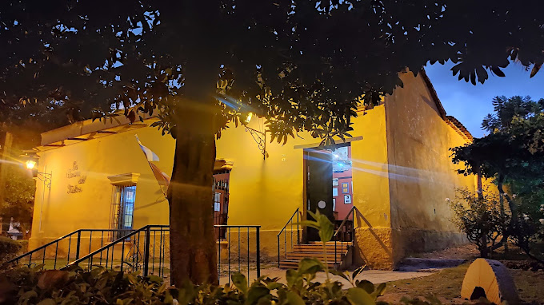
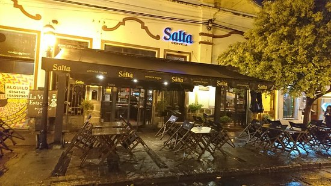
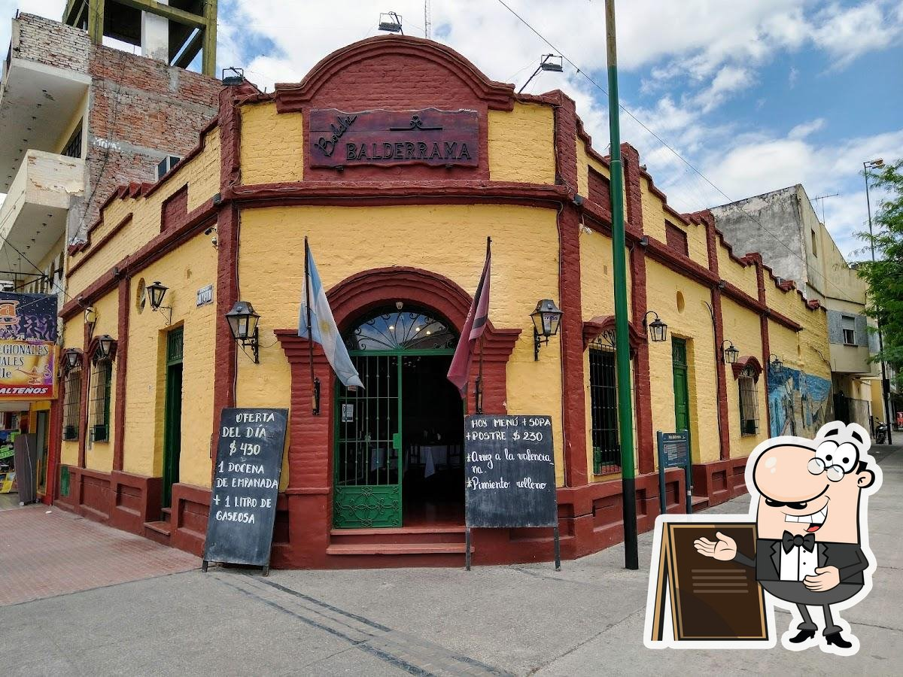
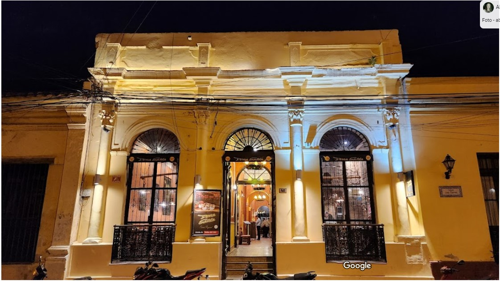
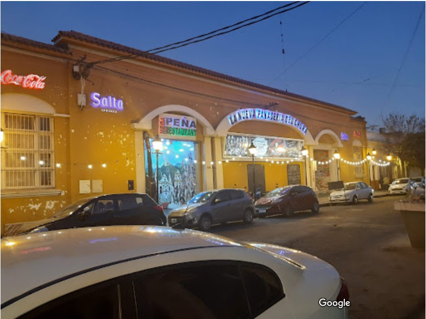

Guia de restaurantes de comida regional
Seleccione el link para ver sus datos y ubicacion:
| Nombre | Direccion | Imagen | Ubicacion |
|---|---|---|---|
| La Casona del Molino | Calle: Coronel Luis Burela Nro: 1, A4400 Salta |  | |
| Peña La Vieja Estacion | Calle: Balcarce Nro: 875, A4400 Salta |  | |
| Peña Boliche Balderrama | Calle: Av. San Martin Nro: 1126, A4400 Salta |  | |
| Doña Salta | Calle: Cordoba Nro: 46, A4400 Salta |  | |
| La Panaderia del Chuna | Calle: Balcarce Nro: 446, A4400 Salta |  |